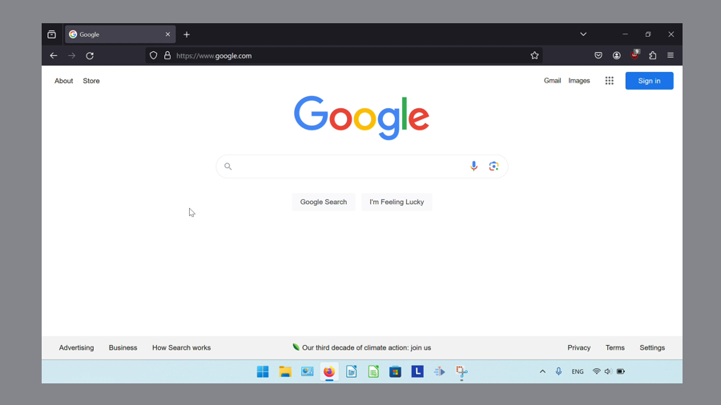

How to Install GIMP on Windows 11
This tutorial covers:
- What is GIMP?
- How to Download GIMP With Google Chrome
- How to Download GIMP With Firefox
- How to Install GIMP With Shortcut
- How to Install GIMP Without Shortcut
- How to Install GIMP From the Microsoft Store With Browser
- How to Install GIMP From the Microsoft Store
- How to Open GIMP With Shortcut
- How to Open GIMP Without Shortcut
- How to Pin GIMP to the Taskbar With Search
- How to Pin GIMP to the Taskbar With Right Click
- How to Pin GIMP to the Taskbar From Start
- How to Pin GIMP to Start
- How to Uninstall GIMP
No time to scroll down? Click through these tutorial slides:
Follow along this tutorial video:
What is GIMP?
GIMP is an acronym for “GNU Image Manipulation Program”. As an image editing software similar to Adobe Photoshop, GIMP can crop photos and apply artistic filters to images. GIMP is a free open source software with source code that anyone can modify. Try GIMP today to embellish graphic designs, photography, illustrations, and more!
How to Download GIMP With Google Chrome
- Step 1: Double click the Google Chrome shortcut to open the Google Chrome browser.

- Step 2: In the browser window that opens, go to a search engine website. For example, click the top address bar, type “google.com”, and press Enter.

- Step 3: On the search engine website, click the search bar, type “GIMP”, and press Enter.

- Step 4: In the search results, click “https://www.gimp.org”.

- Step 5: On the official GIMP website, click “Download”.

- Step 6: Scroll down and click the orange “Download GIMP directly” button.

- Step 7: In the Google Chrome Downloads window that opens, on the GIMP installer file click the “Open” button.

- Step 8: GIMP is now ready to install. Please see How to Install GIMP With Shortcut or How to Install GIMP Without Shortcut.
How to Download GIMP With Firefox
- Step 1: Double click the Firefox shortcut to open the Firefox browser.

- Step 2: In the Firefox browser window that opens, go to a search engine website. For example, click the top address bar, type “google.com”, and press Enter. 
- Step 3: Step 3: On the search engine website, click the search bar, type “GIMP” and press Enter.

- Step 4: In the search results, click “https://www.gimp.org”.

- Step 5: On the official GIMP website, click “Download”.

- Step 6: Scroll down and click the orange “Download GIMP directly” button.

- Step 7: In the download window that opens, click “Save File”.
- Step 8: In the left menu click “Desktop” to save the GIMP setup file to the Desktop. At the bottom of the window, click “Save”.

- Step 9: Go to the upper right and click the “Minimize” or “-” button.

- Step 10: On the Desktop double click the GIMP setup file.

- GIMP is now ready to install. Please see How to Install GIMP With Shortcut or How to Install GIMP Without Shortcut.
How to Install GIMP With Shortcut
- Step 1: After opening the GIMP setup file, if the app asks for permission to make changes to the computer, click “Yes”. In the window that opens click “Install for all users”.
- Step 2: Click the drop-down menu to select and language and click “OK”.
- Step 3: In the lower left of the window, click “Customize”.

- Step 4: For the next three windows, click the “Next” button.
- Step 5: Click the “Create a desktop icon” and click “Next”.

- Step 6: Click “Install”.

- Step 7: Click “Finish”.

- GIMP is now installed and ready to open. Please see How to Open GIMP With Shortcut.
How to Install GIMP Without Shortcut
- Step 1: After opening the GIMP setup file, if the app asks for permission to make changes to the computer, click “Yes”. In the window that opens click “Install for all users”.
- Step 2: Click the drop-down menu to select an installation language and click “OK”.
- Step 3: At the bottom of the window, click “Install”.
- Step 4: Click “Finish”.
- GIMP is now installed and ready to open. Please see How to Open GIMP Without Shortcut.
How to Install GIMP From the Microsoft Store With Browser
- Step 1: Double click a browser shortcut to open the browser.
- Step 2: In the browser window that opens, go to a search engine website. For example, click the top address bar, type “google.com”, and press Enter.
- Step 3: On the search engine website, click the search bar, type “GIMP”, and press Enter.
- Step 4: In the search results, click “https://www.gimp.org”.
- Step 5: On the official GIMP website, click “Download”.
- Step 6: Scroll down and click the blue “GIMP on Microsoft Store” button.
- Step 7: In the Microsoft Store, click “Install”.

- When the “Install” button changes to “Installed”, the installation is complete. Please see How to Open GIMP Without Shortcut.
How to Install GIMP From the Microsoft Store
- Step 1: Go down to the taskbar and click the Start (four blue squares) button.
- Step 2: In the Start window that opens, click the top search bar and type “Microsoft Store”.

- Step 3: On the search results screen, click one of these buttons.

- Step 4: In the Microsoft Store window that opens, click the top search bar, type “GIMP”, and press Enter.

- Step 5: Click the GIMP search result.

- Step 6: Click “Install”.
- When the “Install” button changes to “Installed”, the installation is complete. Please see How to Open GIMP Without Shortcut.
How to Open GIMP With Shortcut
- Step 1: Double click the GIMP shortcut icon on the Desktop.
- GIMP opens.
How to Open GIMP Without Shortcut
- Step 1: Go down to the taskbar and click the Start (four blue squares) button.
- Step 2: In the Start window that opens, click the top search bar and type “gimp”.
- Step 3: On the search results screen, click one of these buttons.
- GIMP opens.
How to Pin GIMP to the Taskbar With Search
- Step 1: Go down to the taskbar and click the Start (four blue squares) button.
- Step 2: In the Start window that opens, click the top search bar and type “GIMP”.
- Step 3: On the search results screen, click “Pin to taskbar”.
- Step 4: Click the pinned GIMP icon on the taskbar.

- GIMP opens.
How to Pin GIMP to the Taskbar With Right Click
- Step 1: First open GIMP. Go down to the taskbar and right click the open GIMP app icon.

- Step 2: In the menu that opens, click “Pin to taskbar”.
How to Pin GIMP to the Taskbar From Start
- Step 1: Go down to the taskbar and click the Start (four blue squares) button.
- Step 2: In the Start window that opens, right click the pinned GIMP app icon. If GIMP is not already pinned to Start, please see How to Pin GIMP to Start.
- Step 3: In the menu that opens, click “Pin to taskbar”.
- Step 4: Go down to the taskbar and right click the pinned GIMP app icon.

- Step 5: In the menu that opens, click “GIMP”.

- GIMP opens.
How to Pin GIMP to Start
- Step 1: Go down to the taskbar and click the Start (four blue squares) button.
- Step 2: In the Start window that opens, click the top search bar and type “GIMP”.
- Step 3: On the search results screen, click “Pin to Start”.
- Step 4: Click Start twice, and in the Start window that opens, click the pinned GIMP app icon.

- GIMP opens.
How to Uninstall GIMP
- Step 1: Go down to the taskbar and click the Start (four blue squares) button.
- Step 2: In the Start window that opens, click the “Settings” button.

- Step 3: In the Settings window that opens, go to the left menu and click “Apps”.

- Step 4: Click “Installed apps”.

- Step 5: Click the top search bar and type “GIMP”, or scroll down to locate “GIMP”.
- Step 6: On the “GIMP” section, go to the far right and click the “Menu” or “…” button.
- Step 7: In the menu that opens, click “Uninstall”.

- Step 8: In the windows that open, click “Uninstall”, “Yes”, and “OK”.
Save these instructions for later with this free tutorial PDF.